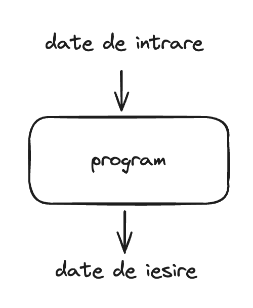
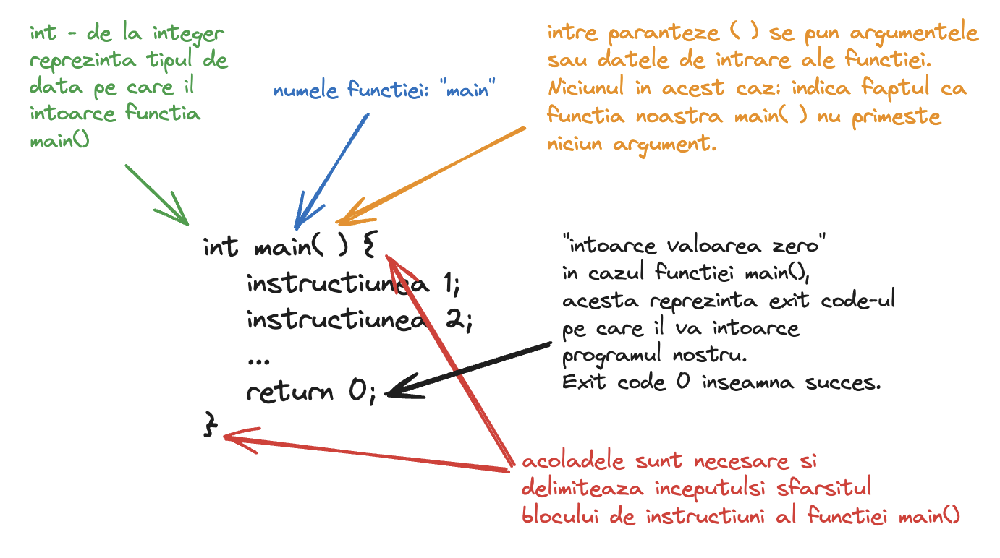

Salut!
Numele meu este Relu, am absolvit Calculatoare la Universitatea Politehnica Bucuresti si am lucrat la companii precum Microsoft si Palantir. Momentan lucrez ca freelancer pentru o companie care dezvolta servicii financiare in domeniul crypto, dar activez si ca asistent in cadrul laboratorului de programare pentru cei de anul I, semestrul I, la universitatea pe care am absolvit-o.
Am creat acest site in timpul liber pentru a-i ajuta pe cei pasionati de tehnologie sa ia primul contact cu programarea. In principiu, este dedicat elevilor de gimnaziu care vor sa invete programare "de la zero", deoarece consider ca nu sunt suficiente surse pe internet pentru a-i ghida pe acestia, dar oricine este binevenit!
Limbajul de programare folosit in acest curs este C/C++. Am ales acest limbaj deoarece acesta este limbajul cu care si eu am inceput si este momentan limbajul predominant in clasele de informatica din liceu.
Daca aveti intrebari sau sugestii, imi puteti scrie un email la draganrelu@gmail.com.
Mult success!
Programe si limbaje de programare
Un program este un set de instructiuni bine definit, pe care calculatorul le executa intr-o ordine precisa, pentru a obtine un rezultat sau pentru a produce un efect dorit de utilizator. Un program poate accepta un set de date de intrare si, in urma executiei, sa produca un set de date de iesire.
Exemple de programe
Aplicatia "Calculator" din sistemul de operare Windows este un program care accepta ca date de intrare o expresie matematica precum 22 + 7 - 13 * 2, efectueaza calculul acesteia si, apoi afiseaza rezultatul pe ecran 3 (datele de iesire). Fiecare dintre acesti pasi (citirea datelor de intrare - expresia matematica, calculul acesteia, afisarea rezultatului pe ecran) este codificat cu un set precis de instructiuni intr-un limbaj de programare.
Datele de intrare pentru un program nu sunt intotdeauna necesare. De exemplu, aplicatia "Weather" de pe telefonul mobil nu accepta date de intrare de la utilizator, insa afiseaza ca date de iesire starea vremii.
Jocurile pe calculator sunt programe care accepta mai multe tipuri de date de intrare:
- miscarea mouse-ului
- tastele apasate
- comenzi vocale (in unele jocuri)
Si produc mai multe tipuri de date de iesire:
- vizuale, pe ecranul monitorului: miscarea protagonistului, actualizarea scorului, animatii
- audio: muzica, sunete specifice jocului
Componentele calculatorului
Calculatorul executa sau "ruleaza" acest set de instructiuni sau "programul" pe componentele sale hardware. Un calculator este compus din:
- CPU (Central Processing Unit) - procesorul - este "creierul" calculatorului, executa instructiunile specificate in program.
- Memoria RAM (Random-access memory) - locul in care programele sunt incarcate temporar pentru a fi executate de catre procesor. Datele din memoria RAM se pierd la restartarea calculatorului.
- Dispozitive de stocare persistenta (hard disk, SSD) - locul in care fisierele utilizatorilor sau ale sistemului de operare sunt stocate. Acestea nu se pierd daca calculatorul este restartat.
- Dispozitive interactive (mouse, tastatura, monitor, boxe, touch screen) - folosite pentru a realiza interactiunea dintre calculator si utilizator.
Limbaj masina
Procesorul unui calculator (CPU) nu poate intelege instructiunile limbajului C/C++, insa poate intelege ceea ce se numeste limbaj masina. O instructiune in limbaj masina arata astfel:
10110000 01100001
Aceste instructiuni sunt formate din secvente de 0 si 1, sau secvente de biti. Un bit este unitatea fundamentala de stocare in memorie si poate lua valori de 0 sau 1. O secventa de mai multi biti poate codifica o informatie mai complexa cum ar fi un sir de caractere "Ana are mere" sau un numar intreg 2321. Vom aprofunda acest lucru mai tarziu.
Prin comparatie, o instructiune in limbajul C/C++ arata astfel:
num = num + 5;
Aceasta instructiune adauga la variabila "num" valoarea 5. Limbajul C/C++ precum si alte limbaje de programare sunt in format text si pot fi intelese mai usor de utilizatori, spre deosebire de limbajul masina care sunt in format binar (adica compuse din secvente de biti 0 si 1).
💡 Fun fact: La inceput cand calculatoarele au fost inventate, limbajele de programare inca nu existau si oamenii trebuiau sa scrie programele direct in limbaj masina.
Insa, cum ajunge calculatorul nostru sa execute instructiunile limbajului C/C++?
Etapele executiei unui program
Pentru executia unui program scris intr-un limbaj de programare (precum C/C++), sunt necesare doua etape:
- Compilare programului - in aceasta etapa, limbajul C/C++ este convertit in limbaj masina cu ajutorul unui compilator.
- Rularea/Executia programului - in aceasta etapa, procesorul va rula instructiunile limbajului masina generat si va produce efectele dorite de utilizator.
Vom discuta mai in detaliu despre acestea in lectiile urmatoare.
Instalare Tool-uri
TODO
Primul tau program: Hello world!
#include <iostream>
using namespace std;
int main() {
cout << "Hello world!" << endl;
return 0;
}
Programul de mai sus, in urma rularii, afiseaza la consola urmatorul mesaj:
Hello world!
Observam ca acest program este compus din mai multe instructiuni. Le vom explica pe fiecare pe rand:
Instructiunea include
#include <iostream>
Cu ajutorul acesteia, includem in programul nostru biblioteca "iostream". O biblioteca este o colectie de cod deja existenta si implementata, pe care o putem folosi in programul nostru.
Mai precis, biblioteca "iostream" contine instructiuni care ne ajuta in citirea si afisarea datelor la consola, de exemplu instructiunile cin si cout.
Un alt exemplu de biblioteca este biblioteca "fstream" care contine instructiuni si metode pentru a citi / afisa date in fisiere text.
Putem include mai multe biblioteci in programul nostru astfel:
#include <iostream>
#include <fstream>
In toate programele noastre vom folosi fie biblioteca iostream fie biblioteca fstream, fie ambele, pentru a face programul nostru sa interactioneze cu date de intrare / iesire.
Instructiunea using namespace
using namespace std;
Daca nu am pune aceasta instructiune, atunci programul nostru ar da o eroare in urma compilarii. Programul nostru nu ar recunoaste instructiunile "cout" si "endl". Desi acestea apartin de bilbioteca "iostream" pe care am inclus-o, ele fac parte si din namespace-ul "std". Un namespace pentru instructiuni este ca un director pentru fisiere. Imaginati-va ca daca vreti sa creati doua fisiere cu acelasi nume in sistemul de operare, le puteti plasa in directoare cu nume diferite pentru a evita conflictul de nume. La fel, daca aveti doua instructiuni cu acelasi nume dar care fac lucruri diferite, le puteti plasa in namespace-uri diferite.
Fara aceasta instructiune, programul nostru ar compila cu succes daca l-am scrie astfel:
#include <iostream>
int main() {
std::cout << "Hello world!" << std::endl;
return 0;
}
Observati ca am folosit:
std::coutin loc decoutstd::endlin loc deendl
In concluzie, using namespace std ii spune programului nostru sa includa toate instructiunile din namespace-ul std, fara a mai fi nevoie sa le specificam noi pe fiecare cu std::.
❗ Atentie! Dupa fiecare instructiune trebuie sa punem punct si virgula (;). Punctul si virgula marcheaza sfarsitul unei instructiuni si inceputul urmatoarei instructiuni. Observati ce eroare va da programul vostru daca stergeti punctul si virgula de dupa
using namespace std;.
Functia main()
Aceasta reprezinta punctul din care programul nostru incepe executia instructiunilor. O functie in programare este un subprogram, sau, mai bine zis, reprezinta un set de instructiuni care vor fi executate intr-o anumita ordine. Vom discuta mai mult despre functii in lectiile urmatoare.

Afisarea
cout << "Hello world!" << endl;
Aceasta instructiune este cea care afiseaza mesajul "Hello world!" la consola. De fapt, aici sunt doua instructiuni. Codul de mai sus este echivalent cu:
cout << "Hello world!";
cout << endl;
cout vine de la "console output" si este o instructiune din biblioteca "iostream" pe care am inclus-o mai sus. Aceasta trebuie sa fie urmata de operatorul "<<" care trebuie sa fie urmat la randul sau de un sir de caractere (mesaj) sau de o variabila, etc. Instructiunea se incheie cu punct si virgula la final (;).
Prima instructiune de mai sus afiseaza sirul de caractere "Hello world!" la consola.
A doua instructiune "sare linia" sau, mai precis, afiseaza la consola caracterul newline care forteaza trecerea pe linia urmatoare. De exemplu programul de mai jos:
cout << "Hello world!";
cout << endl;
cout << "Hello again!";
Afiseaza:
Hello world!
Hello again!
Dar daca nu am sterge cout << endl;, atunci programul ar afisa:
Hello world!Hello again!
Terminatorul de linie endl poate fi inlocuit mai sus cu caracterul newline \n pentru a produce acelasi efect:
cout << "Hello world!";
cout << '\n';
cout << "Hello again!";
Hello world!
Hello again!
Exercitii
Pornind de la programul:
#include <iostream>
using namespace std;
int main() {
cout << "Hello world!" << endl;
return 0;
}
- Modificati programul in asa fel incat sa se afiseze la consola mesajul:
Speak friend and enter!
- Modificati programul in asa fel incat sa se afiseze la consola mesajul:
Death is just another path.
Not all those who wander are lost.
-
"Stricati" programul pentru a observa cum se comporta compilatorul si ce mesaje de eroare va apar la consola in fiecare dintre cazurile urmatoare:
a. Stergeti diezul
#din fata instructiuniiincludeb. Inlocuiti
iostreamcu o biblioteca inexistenta precumiostreammc. Stergeti instructiunea
using namespace std;d. Stergeti acolada deschisa
{e. Stergeti acolada inchisa
}f. Stergeti punctul si virgula de la sfarsitul instructiunii
cout << "Hello world!" << endl;g. Stergeti instructiunea
return 0;
Comentarii
Comentariile sunt ignorate de compilator si pot fi introduse pentru a oferi explicatii aditionale in program.
Comentarii pe o singura linie
Sunt precedate de '//' si se termina odata cu sfarsitul liniei de cod:
#include <iostream>
using namespace std;
int main() {
cout << "Hello world!" << endl; // acesta este un comentariu care va fi ignorat de catre compilator
// comentariul poate fi plasat oriunde in program, si orice urmeaza dupa '//' este ignorat de catre compilator
// putem avea comentarii si pe mai multe linii, dar fiecare linie
// trebuie precedata
// de caracterele '//'
return 0;
}
Comentariile pe mai multe linii
Acestea sunt delimitate de /* si */, astfel:
#include <iostream>
using namespace std;
/* Acesta este un comentariu
pe mai multe
linii */
int main() {
/* astfel de comentarii pot fi introduse si pe o singura linie */
cout << "Hello world!" << endl << "Hello again!" << endl;
cout << /* pot fi introduse chiar si printre instructiuni, desi in practica se evita acest lucru */ "Something looks fishy!" << endl;
return 0;
}
Hello world!
Hello again!
Something looks fishy!
Dupa cum am mentionat, comentariile sunt ignorate de compilator, deci programul de mai sus, din punctul de vedere al compilatorului, este echivalent cu programul de mai jos:
#include <iostream>
using namespace std;
int main() {
cout << "Hello world!" << endl << "Hello again!" << endl;
cout << "Something looks fishy!" << endl;
return 0;
}
Un exemplu practic
/* Includem biblioteca standard iostream pentru a folosi instructiunile
cout si endl */
#include <iostream>
// evitam sa specificam std:: pentru instructiunile incluse din biblioteca iostream
using namespace std;
// functia main este locul din care incepe executia programului
int main() {
// afisam un mesaj la consola
cout << "Comentariile sunt folositoare daca dorim sa facem programul mai usor de inteles!";
// afisam la consola terminatorul de linie, pentru a continua afisarea pe urmatoarea linie
cout << endl;
// Afisam inca un mesaj, pe mai multe linii.
// Observati introducerea caracterului '\n' in interiorul sirului lung de caractere pentru a-l afisa pe mai multe linii
cout << "Comentariile sunt optionale si in practica nu se pun asa de des.\nSe pun doar in cazul in care codul este prea greu de inteles\nsi este suficient sa citim comentariul pentru a intelege ce face codul.\n";
// iesim din programul nostru cu exit code 0 = SUCCES
return 0;
}
Comentariile sunt folositoare daca dorim sa facem programul mai usor de inteles!
Comentariile sunt optionale si in practica nu se pun asa de des.
Se pun doar in cazul in care codul este prea greu de inteles
si este suficient sa citim comentariul pentru a intelege ce face codul.
Citirea si afisarea datelor
TODO
Tipuri de date si operatori
TODO
Instructiuni conditionale
TODO
Instructiuni repetitive
TODO
Bibliografie
Site-uri educationale
- https://www.learncpp.com/
- https://infoas.ro/
- https://www.pbinfo.ro/
- https://www.geeksforgeeks.org/c-plus-plus/
Site-uri cu exercitii
- https://www.nerdarena.ro/
- https://www.infoarena.ro/
- https://leetcode.com/
- https://www.hackerrank.com/domains/cpp